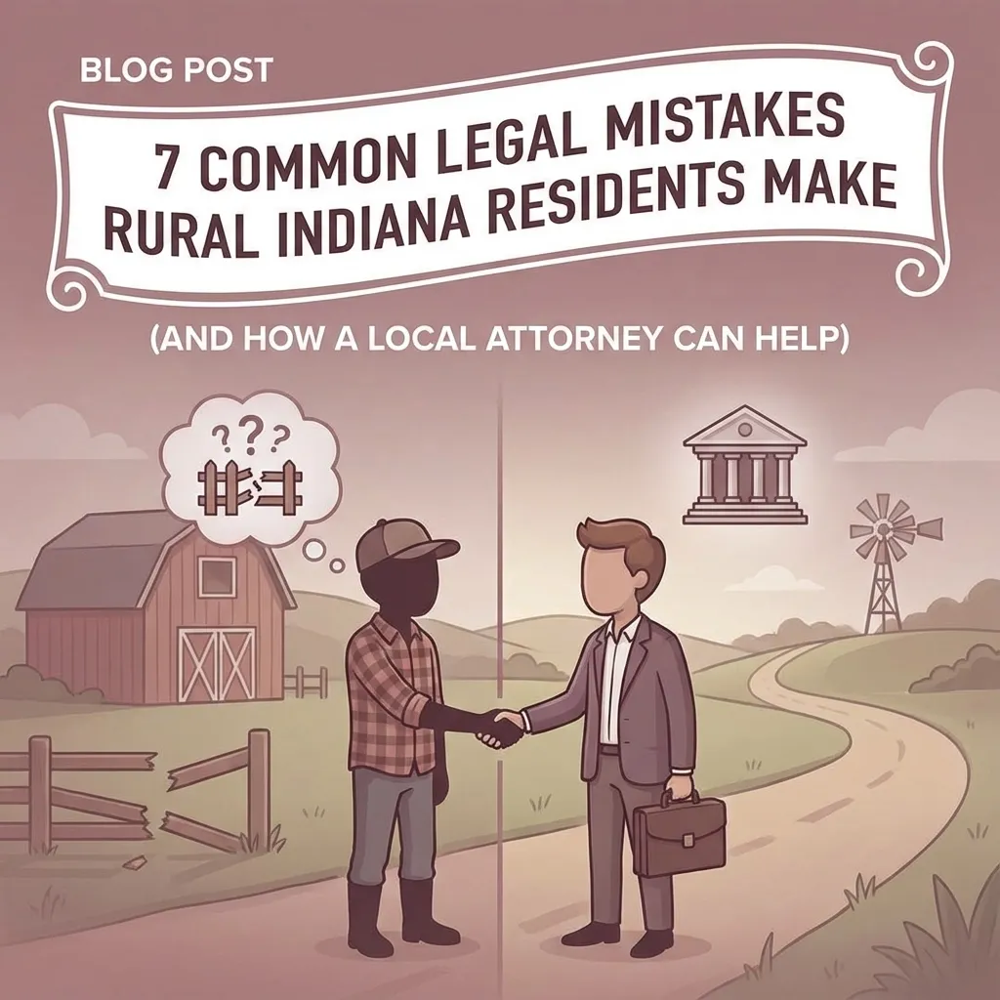
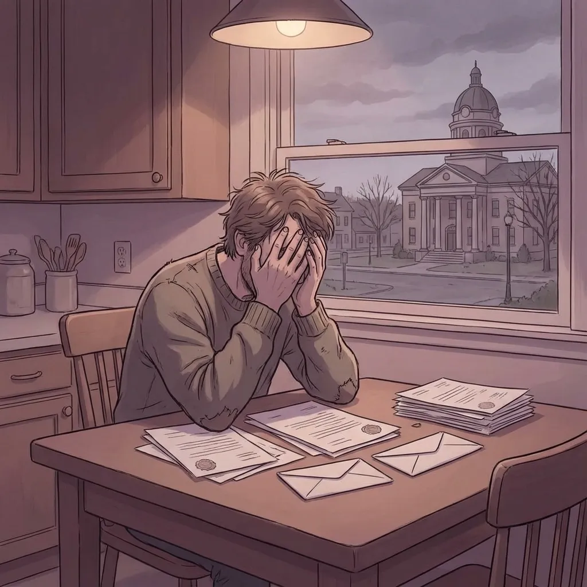
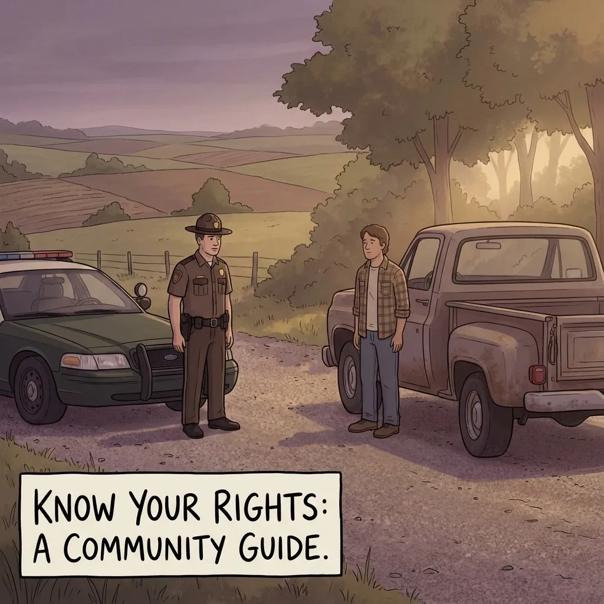

7 Common Legal Mistakes Rural Indiana Residents Make (And How a Local Attorney Can Help)

Living in rural Indiana has its perks, tight-knit communities, lower cost of living, and that small-town feel where everyone knows everyone. But when legal issues arise, folks in places like North Vernon, Commiskey, Hayden, and Scipio often find themselves making costly mistakes simply because they don't have easy access to legal guidance.
As someone who's spent years helping families across Jennings County navigate their legal challenges, I've seen the same mistakes pop up time and again. The good news? Most of these are completely preventable when you know what to watch out for and have a local attorney in your corner.
Let's walk through seven of the most common legal mistakes I see rural Indiana residents make, and more importantly, how to avoid them.
1. Thinking You Don't Need a Lawyer for "Simple" Criminal Charges
This might be the biggest mistake I see. Someone gets pulled over for what seems like a minor traffic violation or gets charged with a misdemeanor, and they think, "I'll just handle this myself. How hard can it be?"
Here's the reality: even "simple" charges can have serious consequences. A DUI conviction doesn't just mean fines – it can cost you your driver's license, your job, and even your housing in some cases. A domestic violence charge, even if it seems minor, can affect your gun rights and employment opportunities for years.
I helped a client from Vernon who thought he could handle a public intoxication charge on his own. What looked like a simple fine could have resulted in jail time and a permanent criminal record. Instead, we worked out a deal that kept his record clean.
How a local attorney helps: An experienced attorney knows the local prosecutors, understands plea bargaining, and can spot issues in police procedures that you might miss. We know which charges are worth fighting and which ones make sense to negotiate.
2. DIY Divorce Without Understanding Indiana Law
Divorce is emotional enough without adding legal complications to the mix. I've seen too many people in Jennings County try to handle their own divorces using online forms, only to end up in a mess that costs far more to fix later.
Indiana has specific laws about property division, child custody, and spousal support. What seems "fair" to you might not be what the law requires. Plus, if you have kids, retirement accounts, or own property together, the paperwork gets complicated fast.
One client came to me after trying to handle her own divorce for months. She'd already made agreements that weren't legally binding and missed deadlines that put her at a disadvantage. We got things back on track, but it would have been much simpler and cheaper to do it right from the start.
How a local attorney helps: We know Indiana family law inside and out. We can explain your rights, help you understand what you're entitled to, and make sure all the paperwork is filed correctly and on time.
3. Not Having a Will Because "I Don't Have Much"
This breaks my heart every time I hear it. People think estate planning is only for wealthy folks, but that couldn't be further from the truth. If you own a house, have a bank account, or have kids, you need a will.
Without a will, Indiana law decides who gets your stuff and who takes care of your children. That might not match what you actually want. I've seen families torn apart fighting over estates that could have been settled peacefully with a simple will.
Several years ago I helped a family whose mother passed away without a will. What should have been a straightforward process turned into a year-long court battle that cost the family thousands and created lasting rifts between siblings.
How a local attorney helps: Creating a basic will doesn't have to be expensive or complicated. We can help you understand your options and make sure your wishes are legally protected. Plus, we can explain other documents you might need, like powers of attorney.
4. Ignoring Debt Collection Notices
When money's tight, it's tempting to just throw those debt collection letters in the trash and hope they go away. But ignoring debt collectors is one of the worst things you can do.
Under Indiana law, if you don't respond to a lawsuit within a specific time frame, you lose automatically, even if you don't actually owe the money. I've seen people lose cases they could have won just because they didn't know they needed to file a response.
A client came to me after a debt collector had already gotten a default judgment against him for a credit card he'd never owned. Because he didn't respond to the lawsuit, the court assumed he owed the money. We were able to get the judgment overturned, but it took months of work that could have been avoided.
How a local attorney helps: We can review your case, help you understand your rights under the Fair Debt Collection Practices Act, and make sure you respond to lawsuits properly. Sometimes we can negotiate better payment terms or even get the case dismissed.

5. Not Understanding Your Rights During Police Encounters
Rural folks tend to be polite and cooperative, which is generally a good thing. But during police encounters, being too helpful can sometimes hurt you. Many people don't understand their rights during traffic stops, searches, or questioning.
You have the right to remain silent, the right to refuse searches in many situations, and the right to have an attorney present during questioning. But if you don't know these rights, you might inadvertently give up important protections.
I had a client who let police search their truck during a routine traffic stop "because I had nothing to hide." They found something that belonged to a friend, and suddenly they were facing drug charges. Understanding his rights could have prevented the whole situation.
How a local attorney helps: We can educate you about your constitutional rights and what to do if you're stopped or questioned by police. If you're already facing charges, we know how to challenge evidence that was collected improperly.

6. Handling Small Claims Court Without Preparation
Small claims court is designed to be simple, but that doesn't mean you should walk in without preparation. I see people lose winnable cases all the time because they don't understand the rules or don't bring the right evidence.
Whether you're suing someone who damaged your property or defending against a claim, you need to understand what evidence the court will accept, how to present your case clearly, and what the deadlines are.
A farmer recently lost a case against a contractor who did shoddy work on his property. He had photos of the damage and text messages from the contractor, but he didn't organize his evidence properly or understand how to present it to the judge.
How a local attorney helps: While attorneys in North Vernon Indiana don't always appear in small claims court, we can help you prepare your case, organize your evidence, and understand what to expect. Sometimes just an hour of preparation can make the difference between winning and losing.
7. Not Reading Contracts Before Signing
In our fast-paced world, people often sign contracts without reading them carefully. Home improvement contracts, equipment leases, employment agreements, they all have terms that can come back to bite you if you don't understand them.
I've helped clients who signed contracts with unfair cancellation clauses, hidden fees, and terms that weren't explained to them. By the time they realize there's a problem, they're often stuck in a bad situation.
One company signed a contract for wind turbines without understanding the financing terms. What they thought was a good deal turned into a payment plan that was much more expensive than they expected.
How a local attorney helps: We can review contracts before you sign them, explain confusing terms, and help you negotiate better deals. It's much cheaper to prevent problems than to fix them later.
Why Choose an Attorney North Vernon Indiana Residents Trust
When legal problems arise, you need someone who understands both the law and your community. As a small-town lawyer, I wear many hats and handle a wide variety of legal matters. I listen to what you have to say and give you options that make sense for your situation.
Working with attorneys in Vernon, Indiana means you're getting someone who knows the local courts, understands rural life, and won't nickel and dime you with unnecessary fees. I'm upfront about costs, including travel fees when I need to meet you outside my office.
The legal system can seem intimidating, but it doesn't have to be. Whether you're dealing with criminal charges, family issues, estate planning, or debt problems, having the right legal guidance can save you time, money, and stress.
Don't Wait Until It's Too Late
Legal problems rarely get better on their own. The sooner you address them, the more options you'll have. If you're facing any of these situations, or if you just have questions about your legal rights, don't hesitate to reach out.
As your local legal resource in Jennings County and surrounding areas, I'm here to help you navigate whatever challenges come your way.
Remember, everyone deserves quality legal representation, regardless of where they live or how complex their case might seem. Don't let these common mistakes derail your life when help is just a phone call away.